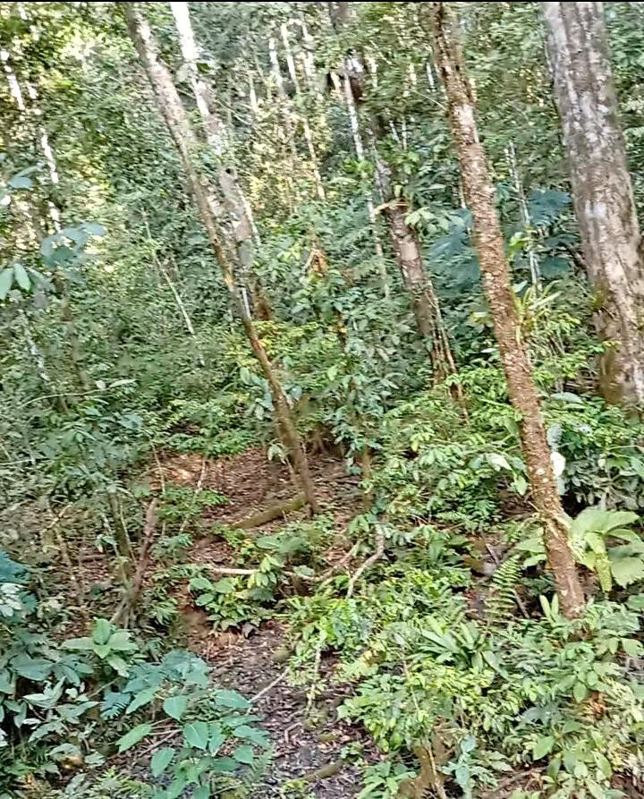

PEN125 60 ha

Se+vende+un+terreno+de+60+hectáreas+en+Sapoa.+cuenta+con+4+hectáreas++de+pasto+26+de+pulma+y+30+de+montaña+y+una+casa+apto+para+ganadería+.El+terreno+cuenta+con+agua+.+cualquier+consulta+a+este+nmr+llamadas+y+de+wasappt[hidden information]